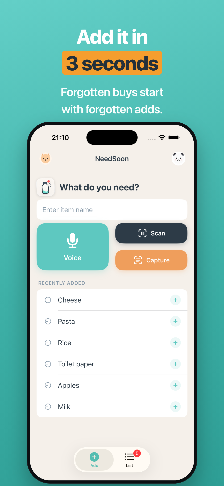
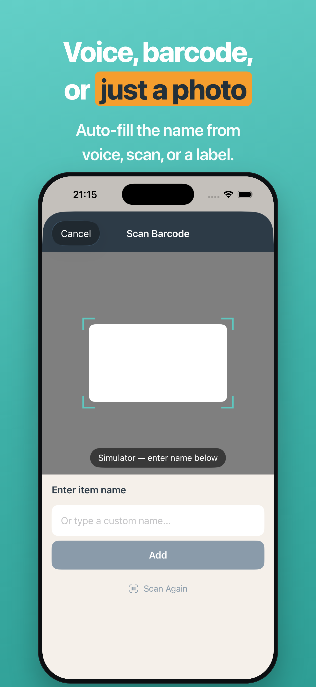
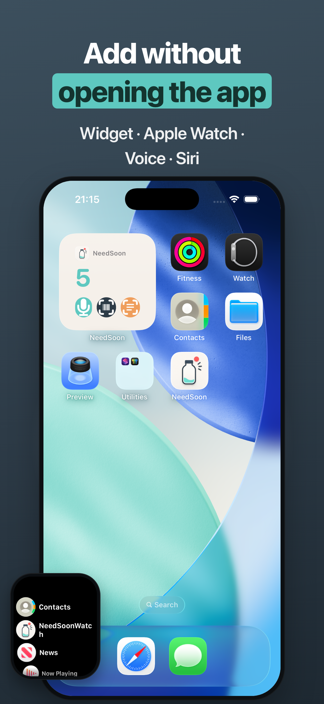
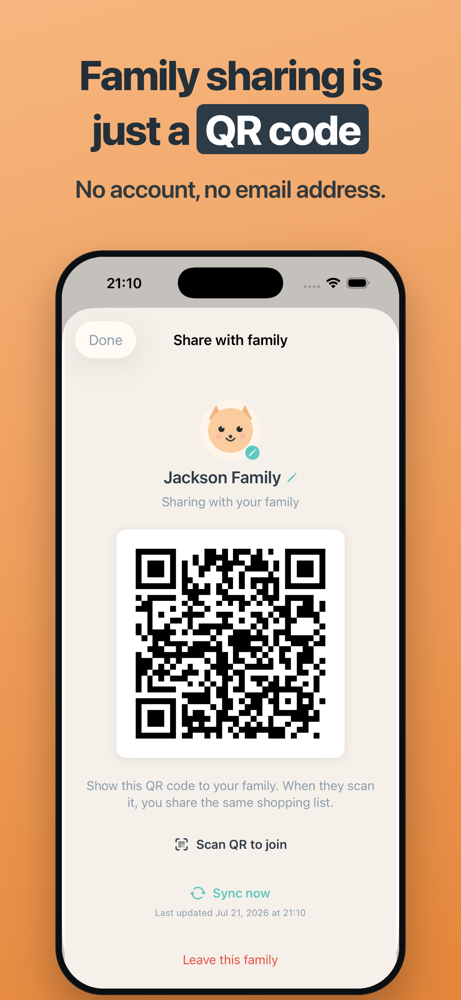
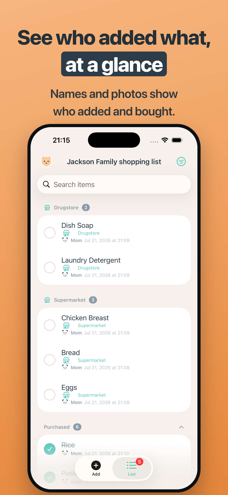

Getting started
The app has two screens: Add and List. Switch with the bottom tabs, or swipe from the left/right screen edges.
- Add — capture an item the instant you think of it (shown first when you open the app).
- List — see your list and check items off as you shop.
1. Add the moment you notice

Type or tap a suggestion
Just type an item name in the Add screen. Duplicates are flagged instead of silently added.
- Re-add recent and frequent items with one tap.
- After adding you'll see "Added …" with an instant Undo.
2. Add by voice, barcode, or photo

Three quick entries
- Voice — speak several at once ("milk and eggs" → 2 items); confirm and drop any you don't need.
- Scan — read a barcode to auto-fill the product name; switch to manual entry if not found.
- Capture — photograph the product label and the name is read on-device (no connection needed).
Camera and microphone permissions are requested only the first time you use that feature.
3. Add without opening the app

Widget, Lock Screen, Siri, Apple Watch
- Widget on the Home or Lock Screen with voice / scan / capture buttons.
- Control Center shortcut jumps straight to Add.
- Siri — say "add to NeedSoon" and answer the prompt.
- Apple Watch — add by voice/text and check items off from your paired Watch.
4. Share with family by QR

No account — just show a QR code
Share one shopping list with your family. No account, no email address.
- Tap the family icon at the top-left of the List screen.
- Choose Create family — a QR code appears.
- On the other device, open the same screen and scan the QR to join.
- Additions and purchases sync to everyone (on foreground / pull-to-refresh).
- See who added and who bought each item, with names and photos.
- The family name and the auto-delete period are shared across the family.
5. Stay on track while shopping

- Sort by added order, store aisle, store, or person.
- Check off with one tap — undo instantly if you slip.
- Assign a planned store per item, or set several at once.
- Purchased items tidy away and auto-delete after a set period (configurable).
6. Settings
Open Settings from the top-right menu on the List screen.
- Auto-delete purchased: 7–90 days / never (default 90; shared across family when sharing).
- Your character: an avatar (animal or photo) and name, shown as "who" when sharing.
- Version info and a link to this support page.
FAQ
Do I need an account to share?
No — and no email either. Family members join by scanning a QR code. Under the hood, devices that know the random family ID (the QR) sync the same list.
Does it work offline?
Yes. Adding, editing, and checking off work offline. Shared syncing happens when you're back online or when you open the app.
Barcode not found / not readable
You can always type the name manually and continue. Store-specific codes that aren't standard barcodes show "not found" and switch to manual entry.
How do I delete my data?
Swipe to delete individual items. To stop sharing, choose "Leave family." Deleting the app removes the data on that device.
Is the Apple Watch app separate?
No. It's included in the iPhone app and installs automatically on your paired Apple Watch. No separate purchase.
Contact
For bug reports, requests, or questions, email us. We reply in English or Japanese.